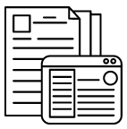
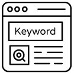
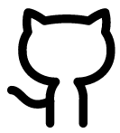

Alan Dantas
Bruna de Brito
Fabrycio Nakano
Joyce Beatriz
Marcelo Ferreira
Matheus Brandão
Maykon Adriell Dutra
Finalmente, após pesquisa e prototipagem da nossa ideia, decidimos como resolver o problema. O chatbot deve auxiliar o autodidatismo, e para isso, criaremos um plugin para suportar sua acessibilidade.
Mas afinal, como criar um plugin para pesquisa? Por isso, propusemos um instruction que visa disponibilizar esse conhecimento técnico, como também suportar isso na nossa aplicação.
Pesquisamos conceitos técnicos para extração de conteúdo da web e desenvolvimento de uma extensão de navegador, e disponibilizamos isso em forma de relatório, vídeo e notebook colab.
Reunimos nossos conhecimentos para começar a construção da nossa ferramenta. Dessa forma, a seguir, começaremos a inserir um chatbot que auxilie na pesquisa do usuário.
Cada tarefa foi relatada da forma mais conveniente em um artigo, vídeo ou notebook colab:
Ao final, desenvolvemos um plugin extremamente simples que reunia nossos conhecimentos: um plugin que exibia o título da página e a pesquisa atual realizada no Google de forma clara e concisa.
|  |
Artigo tutorial - Como fazer um plugin? artigo |
|  |
Dicas e palavras chaves para pesquisa de informações de forma eficiente. documento |
|
Notebook: Mineração de Texto. Colab |
|
|  | Repositório no Github. repositório |